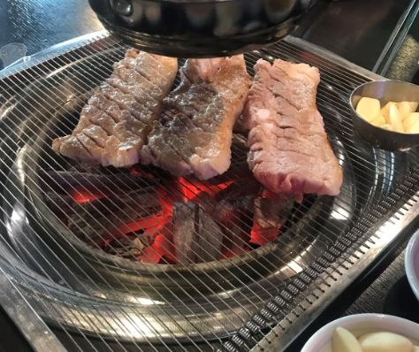
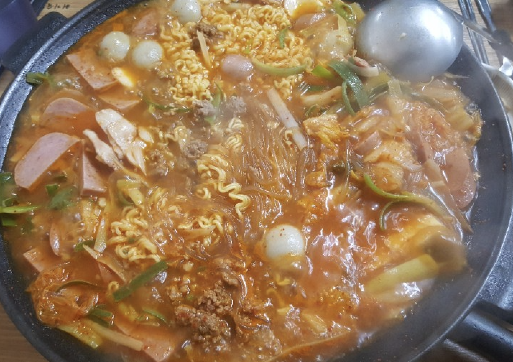
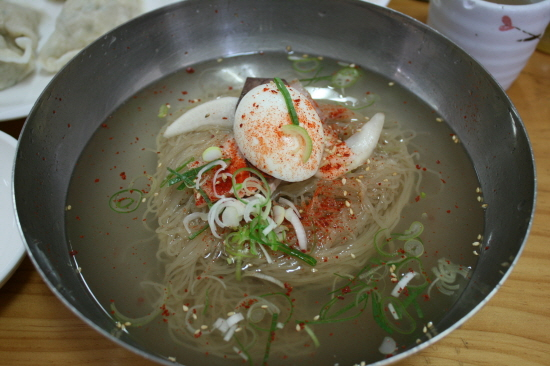

| 한림육가 |
 | |
| 경기 의정부시 범골로35번길 38 | ||
| 매일 10:00 - 22:00 | ||
| 대표메뉴 - 삼겹살, 목살 -싯가 (현재 기준 100g 5000원) | ||
| 정육식당으로서 신선한 고기를 먹을 수 있으나 가격이 정해져 있지 않아 때에 따라 고기 가격이 달라 타이밍을 잘 맞추는 것도 중요 |
|  | 형네식당 |
|
| 경기 의정부시 호국로1309번길 7 (의정부 경전철 중앙역) | ||
| 매일 08:30 - 23:00 | ||
| 대표메뉴 - 부대찌개 9, 000원 | ||
|

| 사쿠라멘 |
|
| *웨이팅이 항상 있으므로 첫 손님으로 가는 것을 추천* | ||
| 경기 의정부시 호암로 243-12 (1호선 회룡역) | ||
| 매일 17:00 - 21:00 | ||
| 대표메뉴 - 11, 000원 등심돈까스 11, 000원 냉라멘 11, 000원 라유짬뽕 | ||
|
이런 곳에 이런 음식이?? 돈까스가 두꺼운데 이렇게 부드러울 수가 있다 |
|  | 평얌면옥 |
|
| 031 - 877 - 2282 | ||
| 경기 의정부시 평화로439번길 7 (의정부 경전철 범골역) | ||
| 매일 11:00 - 20:30 | ||
| 대표메뉴 - 평양냉면 11, 000원 수육 15000원 | ||
|
수요미식회 냉면편에 소개 수육이 별미 |